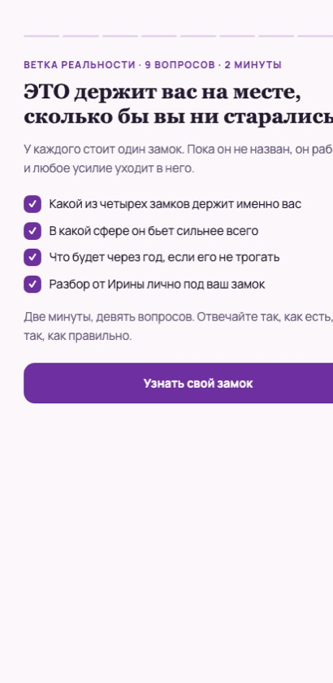
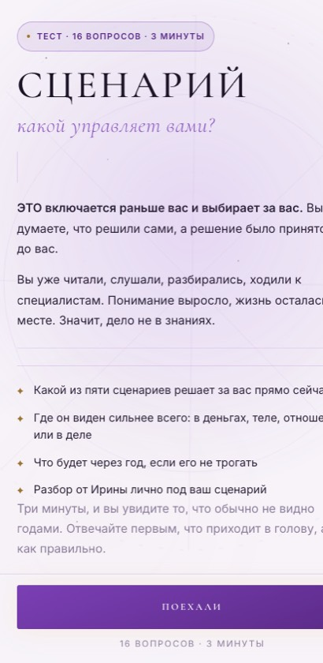
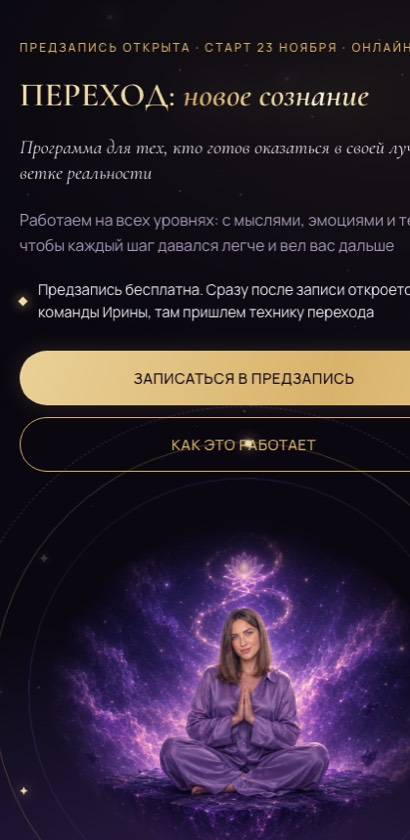
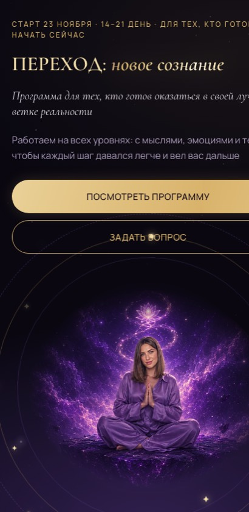
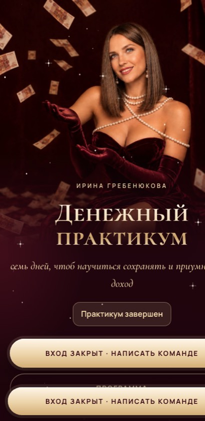
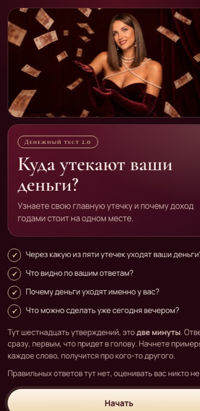
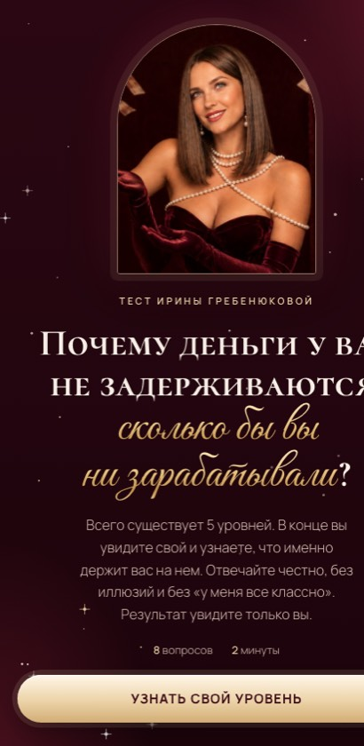
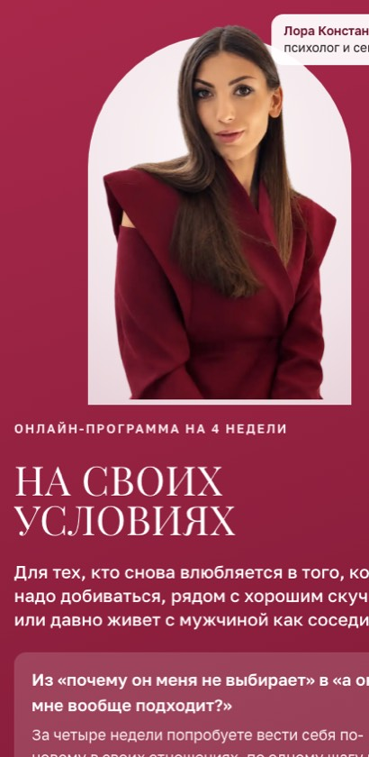
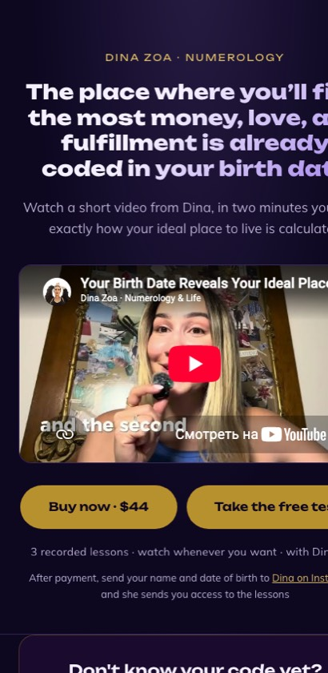

8 лет в проектах и операционке. Меня зовут туда, где хаос и надо собрать всё в систему: запуск, команда, процессы, цифры. Последний год сама собираю сайты, тесты и ИИ-агентов для запусков. Ниже по каждой работе: какая была задача, что я сделала и как.
Всё в кейсах собрано мной в Claude Code, без разработчика и дизайнера: от структуры и текстов до вёрстки, публикации и сбора заявок.
Кейс 01 · онлайн-программа, саморазвитие
Воронка запуска от холодного подписчика до заявки
Задача
Эксперту нужен был понятный путь для аудитории канала: зацепить, показать её проблему, собрать предзапись и продать программу на поток.
Что сделала
Тест-вход. 9 вопросов, 4 типа результата: человек узнаёт, что его держит, и получает разбор
Мини-приложение в Telegram. Тот же тест проходят прямо в канале, без перехода на сайт
Предзапись. Заявки сразу падают в Google-таблицу команды
Продающий лендинг. Программа, тарифы, ответы на возражения
Как
Сначала профиль аудитории и стратегия запуска, потом под каждую ступень воронки свой экран. Тексты собраны из болей и формулировок самой аудитории.
Инструменты
Claude CodeHTML/JSTelegram Mini AppGoogle Apps ScriptGitHub Pages

Тест

Мини-приложение в Telegram

Предзапись

Лендинг
Кейс 02 · финансы, практикум
Прогрев к практикуму через тесты
Задача
Собрать регистрации на бесплатный недельный практикум и подогреть людей к продаже на финальном эфире.
Что сделала
Лендинг практикума. Программа по дням, финальный эфир, регистрация
Тест «Куда утекают деньги». 16 утверждений, 5 типов результата и действие на сегодня
Диагностика. Человек видит свою точку А до старта практикума
Как
Тесты сделала входом в воронку: результат теста сразу ведёт на регистрацию, а тема результата совпадает с темой первого дня практикума.
Инструменты
Claude CodeквизылендингGitHub Pages

Лендинг практикума

Тест «Утечки»

Диагностика
Кейс 03 · психология отношений
Флагман для нового эксперта с нуля
Задача
У эксперта есть опыт и аудитория, но нет упакованного продукта и страницы, куда вести людей.
Что сделала
Распаковка и оффер. Для кого программа и что изменится за 4 недели
Лендинг флагмана. От боли аудитории к программе и записи
Тест. Ведёт в канал прогрева перед стартом
Как
Созвон-распаковка → профиль аудитории → оффер → страница. Язык лендинга взят из реальных запросов клиенток эксперта.
Инструменты
распаковкаофферClaude Codeлендинг + тест

Лендинг программы
Кейс 04 · англоязычный рынок
Курс про переезд для зарубежной аудитории
Задача
Эксперт запускает курс на англоязычную аудиторию, нужен вход в воронку и продающая страница на английском.
Что сделала
Лендинг на английском. С видео эксперта и записью на курс
Тест. По ответам показывает человеку его результат и ведёт к курсу
Как
Структуру и смыслы собрала на русском, тексты адаптировала под англоязычного читателя через ИИ и проверила логику воронки целиком.
Инструменты
Claude CodeEN-локализациялендинг + тест

Лендинг на английском
ИИ-системы, которые я собрала
Не «пользуюсь нейросетями», а встраиваю ИИ в работу так, чтобы рутина шла сама, а люди занимались решениями.
Система из 11 ИИ-агентов для запусков
Задача
Запуск эксперта: много однотипной работы, которая каждый раз делается с нуля.
Что сделала
Агенты по ролям: разбор брифа, анализ аудитории, оффер, стратегия, прогревы в Telegram и Instagram, сценарии рилс и вебинара, лендинги. Диспетчер ведёт проект по этапам.
Как
Описала методологию каждого этапа отдельными инструкциями. Каждый агент берёт результат предыдущего, а я проверяю на контрольных точках.
Агент поиска работы
Задача
Откликаться на десятки вакансий в разных местах и ничего не терять.
Что сделала
Три параллельных агента: hh, Telegram-каналы и сайты. Ищут, фильтруют, пишут сопроводительные под вакансию, отвечают HR.
Как
Общий файл критериев и фактов плюс общий журнал откликов, чтобы агенты не дублировали друг друга. Всё спорное откладывают мне.
Диагностика продаж
Задача
Быстро понять, почему у эксперта не идут продажи.
Что сделала
Упаковала методику из 46 типовых ситуаций застоя («дорого», «я подумаю», падают охваты) в ИИ-инструмент: по описанию кейса ставит диагноз и говорит, что поменять.
Автоматизации и контент
Задача
Снять с команды ручную рутину на каждом запуске.
Что сделала
Автомонтаж рилс: обрезка пауз, субтитры по речи, нарезка под музыку. Связки через Zapier и n8n: задачи, уведомления, автопостинг. Заявки с сайтов сразу в Google-таблицы.
Опыт
Подробное резюме пришлю в Telegram или почтой.
2025 — сейчасФриланс
Проектный менеджер / продюсер онлайн-проектов
Запуски экспертов: продуктовая линейка, оффер, прогревы, лендинги, команда подрядчиков. 21 продажа по $1000 на курсе по продвижению, 500 тыс ₽ на запуске в психологии.
2022 — 2025ОЭЗ «Алабуга»
Руководитель направления / Project Manager
Команда до 50 человек. Построила массовый найм с нуля: регламенты, KPI, отчёты. 8 787 человек за 2024 год, рост с 600 до 13 000 сотрудников. Первый завод запущен за полгода вместо 2–3 лет. Международный проект с Китаем: релокация 14 инженеров.
2018 — 2021Ресторан, Казань
Управляющий партнёр
Привлекла 34 млн ₽, нашла помещение, провела тендеры и стройку, собрала команду. Открылись за 3 месяца, окупаемость за 5 месяцев. До этого в общепите не работала даже официантом.
2020 — 2022Онлайн-школа, производство
Project coordinator, менеджер по развитию
Операционка онлайн-школы, текучесть −10%. В производственном бизнесе: +13 магазинов и 2 сети, оборот +50%, финансовый учёт с нуля.